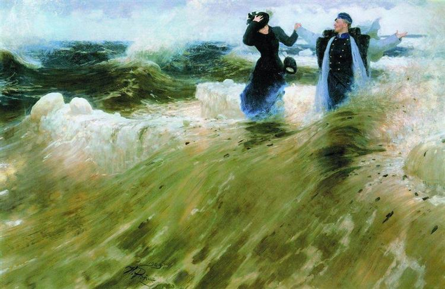
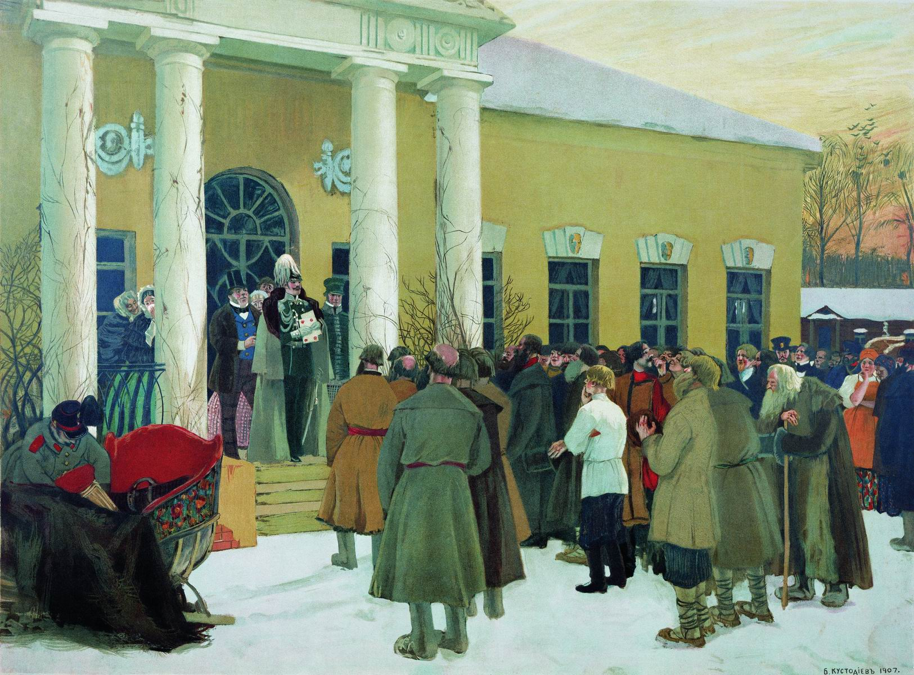

Nobility

The Russian nobility (dvoryanstvo) was an aristocratic class defined by landownership, privilege, and prominence in the higher ranks of imperial bureaucracy (Offord 241–262). Its modern form emerged from the Petrine reforms of the early eighteenth century, when Peter the Great tied noble status to bureaucratic and military rank rather than purely hereditary lineage. This produced a Europeanized and French-speaking class that became increasingly disconnected from the rural estates that remained the foundation of its wealth (Lieven 134–135). The nobility’s dependence on state service rather than independent political authority made the class structurally distinct from its Western European counterparts. It contributed to its vulnerability in the face of nineteenth-century reforms (Lieven 146–147). The Emancipation of the Serfs in 1861 made that vulnerability acute, as landowners were compelled to rationalize or lease their estates, a transition unevenly managed across the class. Tolstoy, writing Anna Karenina in the aftermath of these changes, engaged with a nobility in crisis, particularly as the reforms threatened to displace the gentry’s traditional social and economic authority (Feuer 140–142).
Nobility is a central concern of Tolstoy's fiction. In War and Peace, he places the educated landed gentry at the moral core of Russian society; in Anna Karenina, written in the post-Emancipation decades, this focus persists but becomes more critical, showing what the class had become in the post-Emancipation decades. Where War and Peace presented the nobility under pressure, Anna Karenina explores the tensions and moral uncertainties facing the class in a changing social order (Feuer 143–144). Alexander Pushkin largely influenced Tolstoy in his views of the nobility. In "My Genealogy,” Pushkin refuses the label of aristocrat not out of false modesty but because the word has been debased: the new nobility rose through "shining the tsars' boots" (Feuer 160) and court servility, while his own ancient boyar lineage was built on martial service and independence from sovereign favor. Declaring himself "my own man" (Feuer 160), Pushkin insists that genuine nobility consists in ancestral tradition and self-sufficiency rather than rank or proximity to power. Tolstoy took this distinction to heart and sharpened it for the post-Emancipation moment. His target was not only the new service nobility but the mercantile class now absorbing what the gentry was surrendering. He denounced those who preferred Gogol's social realism to Pushkin's aristocratic critique as "vile," aligning himself explicitly with the Pushkin tradition against what he saw as the corrupt literary and social values of his age (Feuer 141–142, 158–160). Anna Karenina is where that inheritance finds its sharpest novelistic form. Anna Karenina, unlike much of Russian literature at the time, is a novel about the nobility, with 32 of the 42 principal characters belonging to the nobility. Tolstoy engages with the definition of nobility polemically by focusing on aspects of nobility other than heredity, such as moral responsibility, social dynamics, land ownership, and spirituality. He represents multiple archetypes of the Russian nobility through different characters in the novel. The concept of nobility therefore, serves as a critique of upper-class Russian society, exposing the gap between social rank and internal values. Konstantin Levin lives on his estate and engages directly with the post-Emancipation challenge of managing land alongside free peasants, experimenting with cooperative arrangements where other noblemen refused to adapt. Oblonsky, by contrast, embodies the failure of the absentee urban noble. He is unfaithful to his wife, reckless with finances, and indifferent to his estate. The eventual sale of wood to the merchant Ryabinin makes this failure concrete (Tolstoy 168–172). Ryabinin outmaneuvers Oblonsky with ease, and Levin, who witnesses the transaction, is appalled by both the financial imprudence and its symbolic meaning: the progressive transfer of noble assets to the mercantile class, a shift that Tolstoy associated with the broader post-Emancipation transformation of social and economic power (Feuer 140–141). The Shcherbatsky family serves as a positive depiction of Moscow nobility, characterized by traditional Russianness and genuine kindness. Tolstoy highlights the importance of sincerity, familial devotion, and self-reflection by comparing Kitty’s relationship with Levin to Anna’s relationship with Vronsky. He further uses Dolly to redefine nobility as dedication to family, humility, forgiveness, and the ability to endure suffering without vengeance. In earlier stages of the novel, Dolly is portrayed as a pitiable figure compared to Anna. However, once Dolly sees Anna’s life at Vronsky's estate, she ceases to doubt her personal sacrifices for childbirth and motherhood. Dolly represents an alternative path as a noblewoman, showing that prosaic love and selflessness mark true nobility. Nevertheless, Tolstoy uses the Shcherbatskys to critique the nobility's superficial values. Princess Shcherbatsky endorses Vronsky due to his superior social appearance, while Prince Shcherbatsky recognizes Levin’s honesty and devotion and suspects that Vronsky does not intend to commit himself to Kitty. The Prince’s evaluation proves to be correct, showing that the superficiality common among the nobility is a harmful approach. Tolstoy again critiques the urban nobility’s estate management, describing the failures and subsequent financial losses of Prince Shcherbatsky, who also does not live on his estate. In St. Petersburg, nobility appears not as a moral category but as a system of social performance structured by rank, ritual, and visibility. Tolstoy primarily depicts four circles within the St. Petersburg nobility. Alexei Karenin represents the high-ranking government officials of the urban bureaucracy. Karenin strictly adheres to social norms and places reputation above genuine feeling. His initial reaction to Anna’s affair depicts an inability to confront human emotions genuinely. His decisions are driven by society’s expectations, leaving him with a life devoid of true meaning. Karenin’s interpretation of nobility is entirely external, defined by propriety and status, and, through him, Tolstoy illustrates the emptiness of modern urban nobility. Princess Betsy Tverskoy represents a second circle, the morally corrupted and hypocritical St. Petersburg elite. Her behavior towards Anna supports the belief that noble society was governed less by morality than by adherence to social codes and appearances (Lieven 136–138). Anna's openness, not her affair itself, provokes their hostility, showing that adultery is tolerated so long as it is concealed. Countess Lydia Ivanovna embodies a third circle, which exemplifies the performative nature of upper-class religious pursuits. Like many St. Petersburg elites, Countess Lydia was fascinated by Western Radstockism, which Tolstoy himself distrusted. Her Radstockist devotion coexists with the cruelty of separating Anna from her son Seryozha (Tolstoy 511–514). Tolstoy captures a fourth St. Petersburg noble paradigm through the social milieu in which Count Vronsky is set at the beginning of the novel, prior to his relationship with Anna. This group is defined by moral vacancy. They value military prestige, yet indulge in gambling, drinking, and spending time with prostitutes. Tolstoy shows the stark contrast between Vronsky, once he commits to a relationship with Anna, and Yashvin. His partial evolution away from it measures how far he travels toward genuine feeling, and how incomplete that journey ultimately remains. Anna herself complicates the concept of nobility. Society shuns her not because of her affair but because she refuses to maintain appearances, revealing that the nobility's code demands performance over truth. Ultimately, Anna Karenina defines nobility as an inward moral achievement rather than an inherited social position. Following in the tradition of Pushkin's critique of the Europeanized nobleman, Tolstoy's polemic suggests that the highest form of nobility lies not in privilege but in the difficult, ongoing pursuit of an authentic and ethical life. Nobility is a privilege of responsibility: ancestral tradition does not merely place a nobleman in a privileged position, but also entrusts him with responsibility. In both Pushkin’s and Tolstoy’s understanding, true nobility lies not in rejecting one’s inherited position, but in fulfilling the responsibilities that accompany it.
Works Cited
- Feuer, Kathryn B. "Tolstoy's Rejection of the Spirit of 1856." Tolstoy and the Genesis of War and Peace, 1996.
- Lieven, Dominic. "Life, Manners, Morals." The Aristocracy in Europe, 1815–1914. 1992.
- Offord, Derek. "The People." A History of Russian Thought, edited by William J. Leatherbarrow and Derek Offord, 2010.